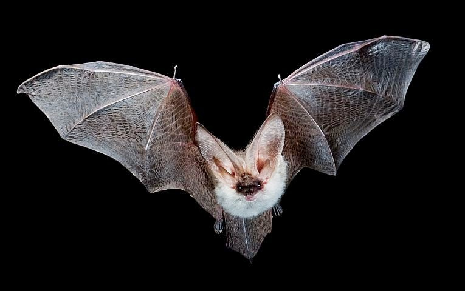

Murcielagos

¿Qué pasa con las plantas de floración nocturna? Aquí entran a la escena los murciélagos polinizadores, que se sienten atraídos por ciertos sonidos de alta frecuencia que realizan las especies para acercarlos a ellas.